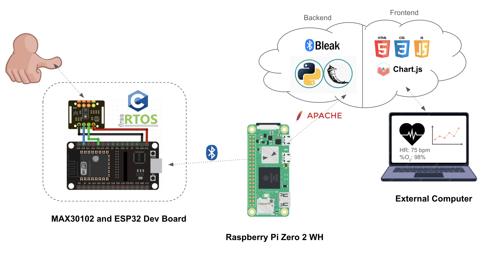

Heart Rate Monitor
Project Architecture (High-Level)
- Sensor: MAX30102 PPG
- MCU: ESP32-S3-WROOM-1
- Server: Rapsberry Pi Zero WH
- CLient Device: External Computer
Sensor Choice
Choice between this and analog sensors, but analog sensors seemed to be more plug and play so digital sensor provides opportunity for more low level work.
MCU Choice
Choice between this, STM32 MCU, RPi Pico, and just going straight to RPi Zero. STM32 does not have BLE/Wi-Fi chip, so would need additional module and more complex software to drive it. RPi Pico was compelling. Going straight to RPi Zero would have made it hard to allow PPG Sensor & MCU peripheral device to be battery powered standalone device due to higher power consumption. ESP32 has higher power consumption than the STM32, but hopefully still low enough to be battery powered using some kind of rechargeable Li-Ion battery that would last ~ 2 hours in hand held size device.
- Operating using freeRTOS and running two primary tasks: BLE GATT service and data read/process via I2C from MAX30102
- BLE Task: [TBD]
- Data Read/Process Task: Read raw data from MAX30102, process data to convert to heart rate and blood oxygen %, make data availble for BLE Task
Raspberry Pi Zero W
Cheaper than full blown RPi 4 or 5, which also would have been major overkill for just serving a webpage with limited front end and back end requirements. It is also small and I wanted to try out a fully headless unit to keep sharpening Linux skills.
- Serve web page using Apache
- Front end: HTML and JavaScript with Chart.JS for creating graph on the web page
- Backend: Python BLE client using bleak and Flask used for server-side logic for web-page
- Database: [TBD- need to determine use case and then select most relevant DB]
External Computer
Used to access local web page served by RPi to visualize real-time data from PPG sensor. Essentially acts as a head unit for RPi without actually needing a screen for the RPi. Also more reflective of the tech stack used in industry for an IoT device like this.